书库
Kardec 的十部著作，全本无删节。
《灵魂之书》（含第 2 版全部 1,018 个问题）、《灵性主义福音》、《灵媒之书》、《天堂与地狱》、《创世记》以及另外五部著作——内容完整，无需订阅。

Allan Kardec 著作
Allan Kardec 的十部著作，全本无删节，由我们依据法文原著自行翻译。离线可用，无广告，无需账户。
完整免费阅读 · 插图与研读一次性购买 · 支持五种语言
Rivail 提供葡萄牙语、西班牙语、英语和法语版本。图片为英文版界面。
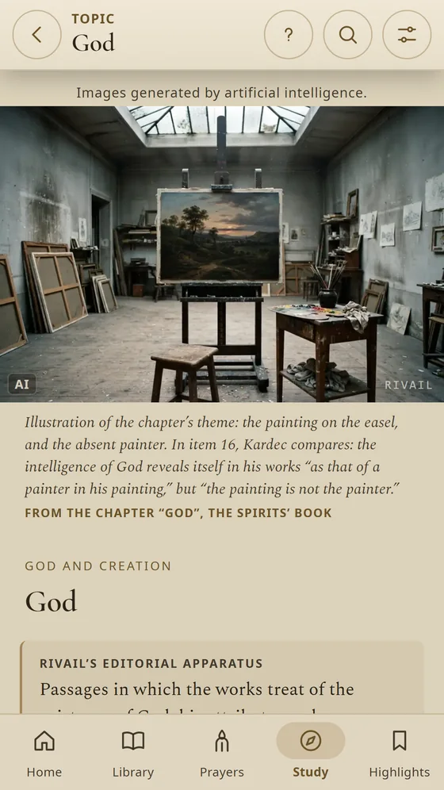
可读、可听、可祷告、可研读的 Kardec 著作——忠实于他所出版的原貌。
书库
《灵魂之书》（含第 2 版全部 1,018 个问题）、《灵性主义福音》、《灵媒之书》、《天堂与地狱》、《创世记》以及另外五部著作——内容完整，无需订阅。
译本
没有一行取自其他译本。正文译自 Kardec 亲自出版的版本，并对照当时的影印本校订。只要您需要，每个条目下方都可显示法文原文。
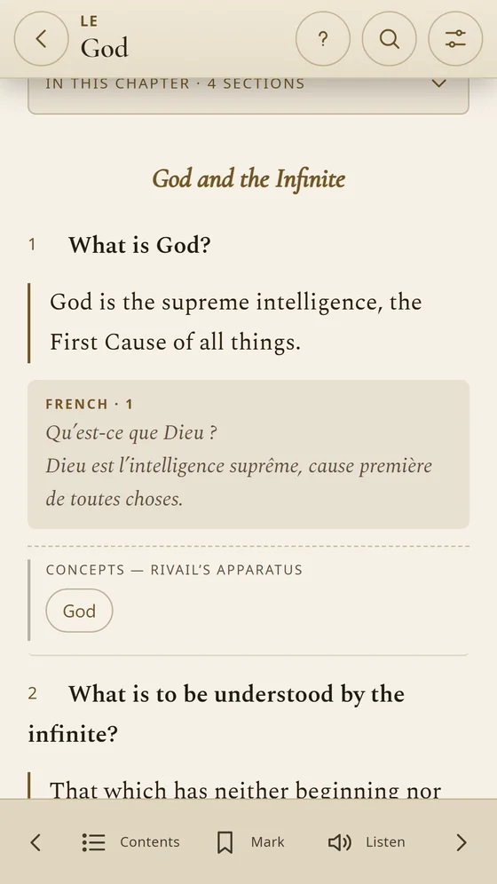
本版注释
注释解释当时的用语，并展示原版的内容，让您读到 Kardec 笔下的原貌。
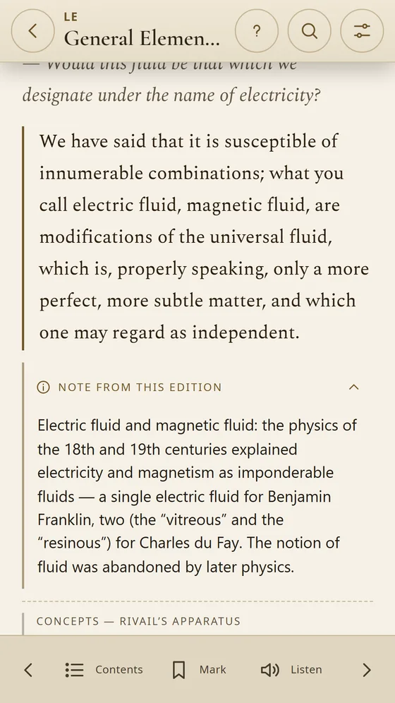
插图版
超过 150 幅复原场景，每章一幅，每幅都附有说明文字，指出画面内容的出处。另有每部著作经考证的封面。

祷文
《灵性主义福音》中的祷文，按时刻分类：睡前、苦难中、为病人、为逝者、求取指引。
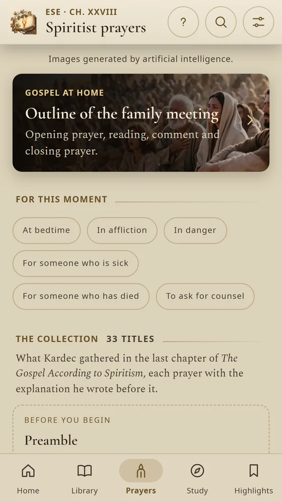
家庭福音会
家庭福音会指引：开会祷告、诵读、讲解和结束祷告。与家人一起的简短聚会，每周固定在同一天、同一时间。
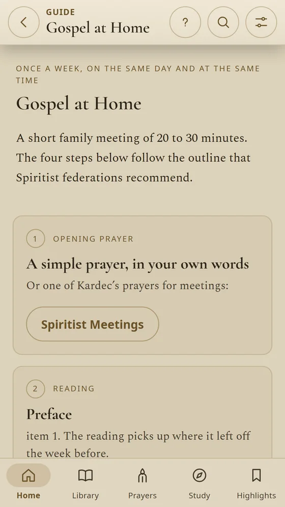
学说研读
上帝、轮回转世、灵媒能力、自由意志、来世、慈善。三个《灵魂之书》阅读计划，以及在十部著作中同时搜索。
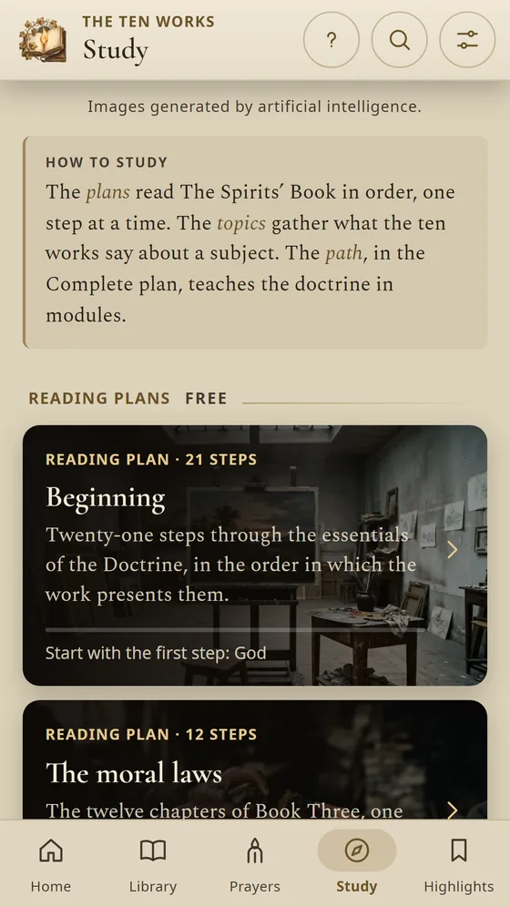
日常使用
每日段落与每日问题、提醒和小组件、标明出处的分享卡片、字号调节以及色盲色彩适配。还有《灵魂之书》和《灵性主义福音》的离线音频。
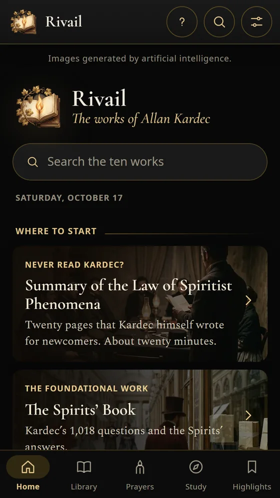
iPad 版
在 iPad 上，页面留有宽阔的页边距，读起来就像一本书。支持巴西葡萄牙语、葡萄牙葡萄牙语、西班牙语、英语以及法文原文。
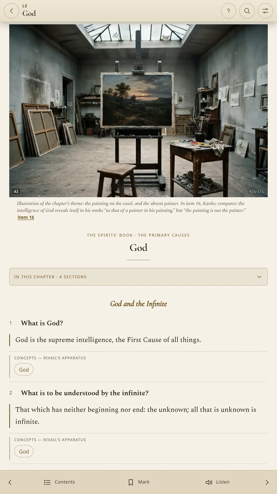
应用中的著作内容完整，无需订阅，没有广告。付费方案为一次性购买，增加深入研读和插图——绝不包括正文。
应用界面。
Rivail 提供葡萄牙语、西班牙语、英语和法语版本。图片为英文版界面。
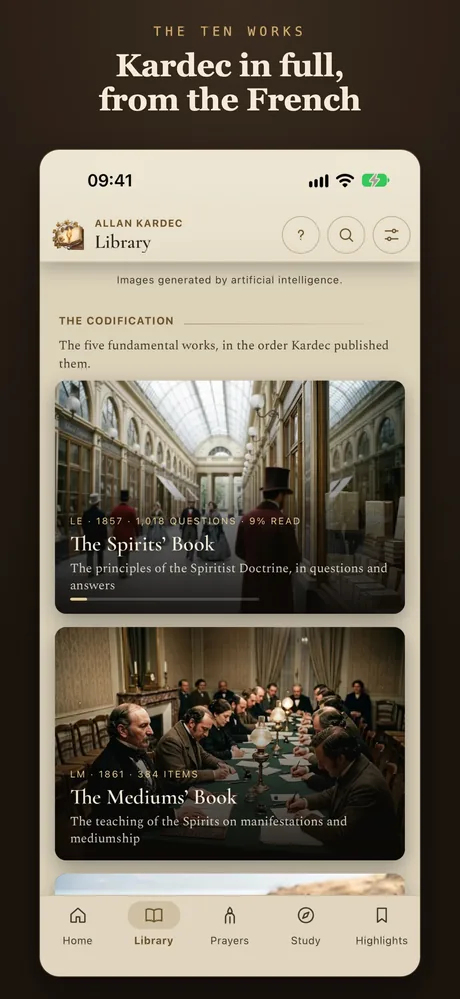
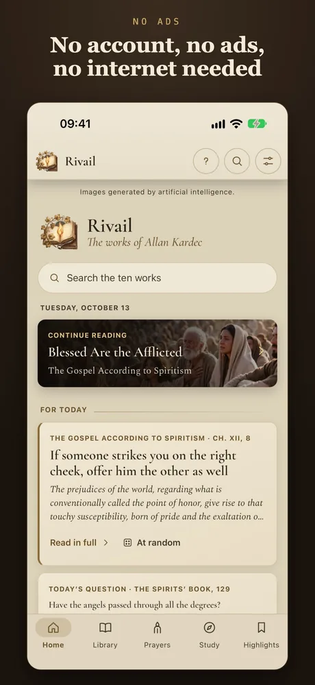
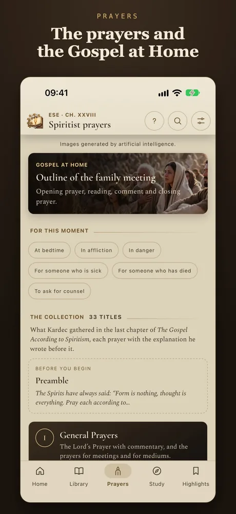
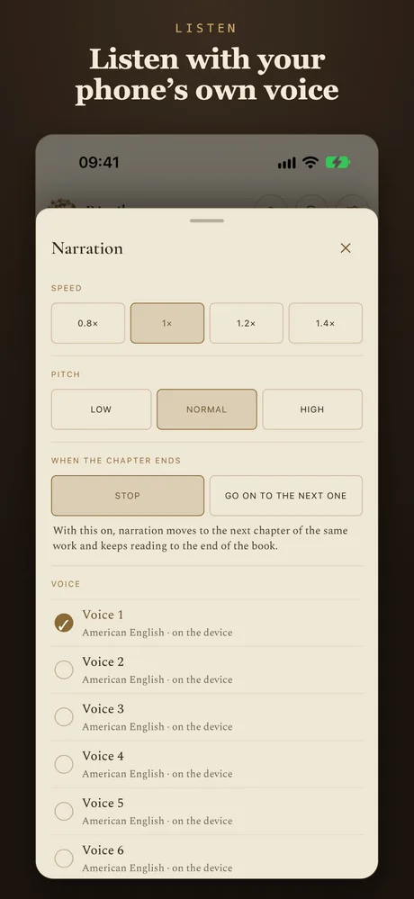
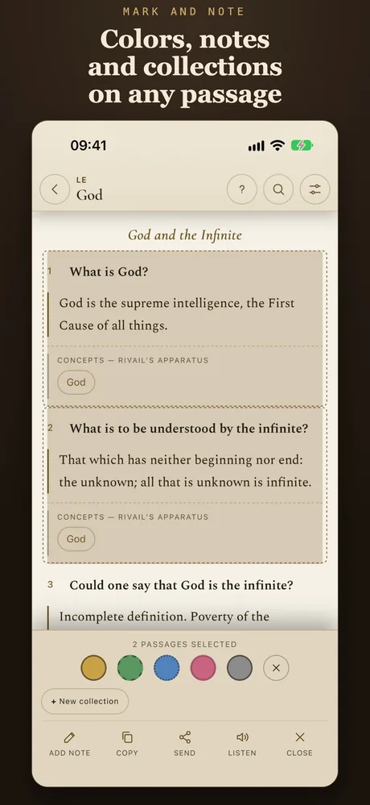
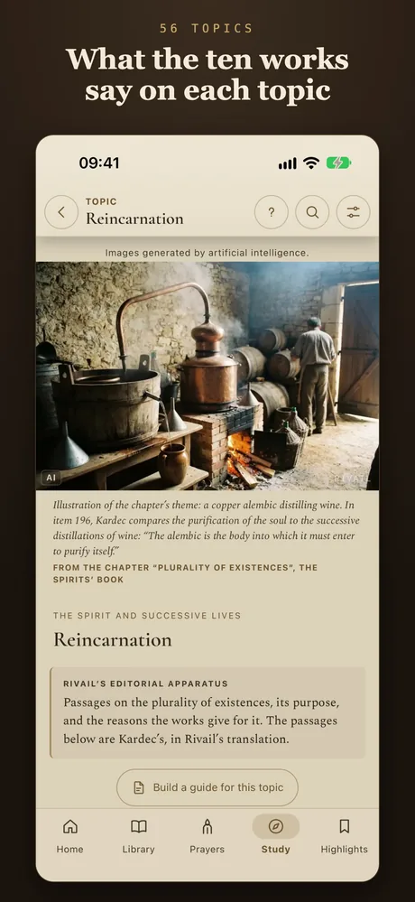
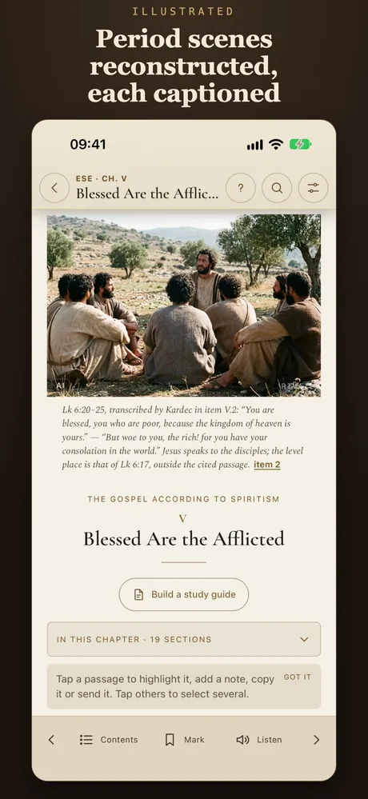
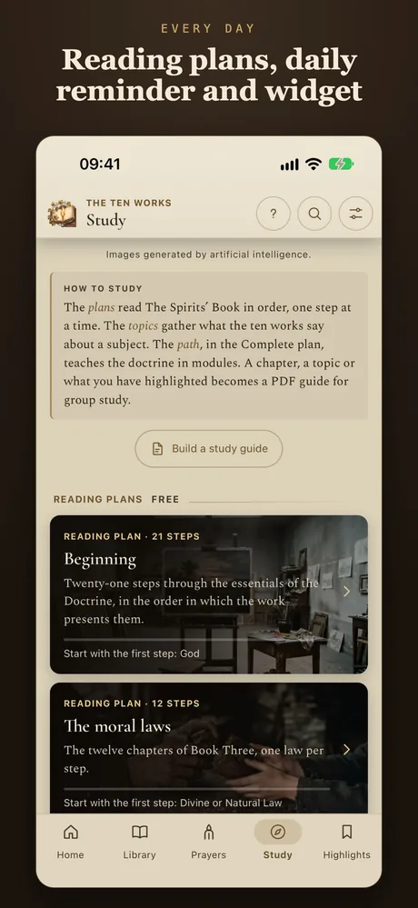
插图版包含经考证的封面以及超过 150 幅复原的时代场景，每章一幅，每幅都附有说明文字，指出画面内容的出处。完整版增加 56 个完整主题、模块化学习路径和 PDF 指引。已购买插图版的用户只需支付差价。
支持巴西葡萄牙语、葡萄牙葡萄牙语、西班牙语、英语以及法文原文。Rivail 是一个独立项目，与任何联合会或出版社均无关联。
是的。十部著作内容完整，无需订阅，没有广告。付费方案为一次性购买，增加深入研读和插图——绝不包括正文。
译自法文原著。没有一行取自其他译本：正文译自 Allan Kardec 亲自出版的版本，并对照当时的影印本校订。
可以。阅读和语音朗读都可离线使用。
巴西葡萄牙语、葡萄牙葡萄牙语、西班牙语、英语以及法文原文：涵盖著作、研读内容和整个应用。
不是。Rivail 是一个独立项目，与任何联合会或出版社均无关联。
在 iPhone、iPad 或 Android 上免费下载。